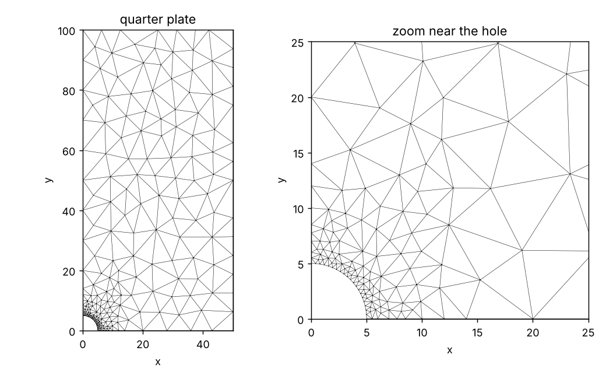
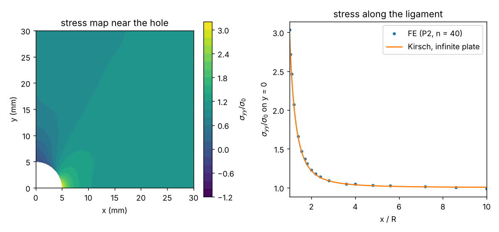

Curriculum/Computational labsLAB 507
Lab: Finite elements with scikit-fem
The finite-element method (FEM) turns a differential equation into a large system of linear equations by dividing the body into small elements and approximating the solution with a simple function on each. Commercial programs hide this behind a graphical interface; this lab opens the box with the small, free Python library scikit-fem, so that every step is a line of code that you can read: mesh, basis, assembly, boundary conditions, solution and post-processing. You begin with a problem whose exact answer is known so that you can measure the error, and finish with the standard engineering problem of the stress concentration at a hole.
- Reading time
- about 29 min
- Leads to
- —
- Level
- Graduate: simulation methods
- Write the weak form of a PDE in scikit-fem and assemble the matrix and the load vector.
- Impose Dirichlet and symmetry boundary conditions and traction loads.
- Measure convergence rates and choose between linear and quadratic elements.
- Mesh a plate with a hole with a size gradation, solve linear elasticity, and recover the stresses.
- Compute a stress concentration factor and verify it with an analytical result and with a force balance.
- Recognise the usual mistakes (gross against net stress, unconnected nodes, invalid meshes).
Step 1. Install#
python3 -m venv ~/venvs/fem && source ~/venvs/fem/bin/activate
pip install scikit-fem numpy scipy matplotlib triangle
python -c "import skfem; print(skfem.__version__)"12.0.2triangle is a Python interface to J. R. Shewchuk’s mesh generator, which is used in Step 5. The larger and more general program Gmsh (pip install gmsh) can be used instead; on some Linux systems it needs the system library libGLU (for example apt install libglu1-mesa), which was not available in the environment in which this lab was produced, so Triangle is used here. For a graphical result, ParaView reads the VTK and XDMF files that scikit-fem and meshio can write.
Step 2. The method in one page#
To solve $-\nabla\cdot(\nabla u)=f$ in a domain $\Omega$ with $u=0$ on the boundary, multiply by a test function $v$ that vanishes on the boundary and integrate by parts: find $u$ such that
$$\int_\Omega\nabla u\cdot\nabla v\,\mathrm d\Omega=\int_\Omega f\,v\,\mathrm d\Omega\quad\text{for all }v.$$
This is the weak form (MATH 301). Divide $\Omega$ into elements and approximate $u\approx\sum_ju_j\varphi_j$ with piecewise polynomial basis functions $\varphi_j$ (value $1$ at node $j$ and $0$ at the others). Taking $v=\varphi_i$ gives the linear system $\mathbf K\mathbf u=\mathbf f$ with $K_{ij}=\int\nabla\varphi_j\cdot\nabla\varphi_i$ and $f_i=\int f\varphi_i$. In scikit-fem the left side is a BilinearForm (a Python function of $u$, $v$ returning the integrand), the right side a LinearForm, the mesh is a Mesh object, the elements are chosen with an Element class, and Basis ties them together. Assembly loops over the elements with numerical integration (Gauss quadrature), which is done in vectorised form by the library.
Step 3. A one-dimensional bar and a convergence study#
The simplest problem is $-u''=1$ on $(0,1)$ with $u(0)=u(1)=0$, a bar loaded by its own weight or a string under uniform load. The exact solution is $u=x(1-x)/2$. The script solves it with $4$ to $128$ linear elements and computes the maximum error at the nodes, the maximum error between nodes, and the $L^2$ and $H^1$ (gradient) norms of the error:
"""The simplest finite-element problem: -u'' = 1 on (0,1), u(0)=u(1)=0, exact solution u = x(1-x)/2."""
import numpy as np
from skfem import MeshLine, Basis, ElementLineP1, ElementLineP2, BilinearForm, LinearForm, solve, condense
from skfem.helpers import dot, grad
@BilinearForm
def a(u, v, w): return dot(grad(u), grad(v))
@LinearForm
def f(v, w): return 1.0 * v
exact = lambda x: x * (1 - x) / 2
print("elements h max nodal error max error (fine grid) L2 error H1 error")
prev = None
for n in (4, 8, 16, 32, 64, 128):
m = MeshLine(np.linspace(0, 1, n + 1))
basis = Basis(m, ElementLineP1())
A, b = a.assemble(basis), f.assemble(basis)
u = solve(*condense(A, b, D=basis.get_dofs()))
nodal = np.abs(u - exact(m.p[0])).max()
# L2 and H1 error of the piecewise-linear solution, integrated with Gauss points
xq = basis.global_coordinates().value
uq = basis.interpolate(u).value
duq = basis.interpolate(u).grad[0]
dx = basis.dx
L2 = np.sqrt(np.sum((uq - exact(xq))**2 * dx)); H1 = np.sqrt(np.sum((duq - (0.5 - xq))**2 * dx))
xf = np.linspace(0, 1, 2001); fine = np.abs(np.interp(xf, m.p[0], u) - exact(xf)).max()
print(" %4d %.5f %.2e %.2e %.3e %.3e" % (n, 1 / n, nodal, fine, L2, H1))elements h max nodal error max error (fine grid) L2 error H1 error
4 0.25000 1.39e-17 7.81e-03 5.208e-03 7.217e-02
8 0.12500 1.39e-17 1.95e-03 1.302e-03 3.608e-02
16 0.06250 1.39e-17 4.88e-04 3.255e-04 1.804e-02
32 0.03125 3.61e-16 1.22e-04 8.138e-05 9.021e-03
64 0.01562 1.17e-15 3.05e-05 2.035e-05 4.511e-03
128 0.00781 1.17e-15 7.63e-06 5.086e-06 2.255e-03Three results to understand. (1) The nodal error is of the order of $10^{-16}$ (round-off): in one dimension the finite-element solution of this equation is exact at the nodes (a special property of 1D second-order problems). (2) Between the nodes, the piecewise-linear interpolation deviates from the parabola by $7.8\times10^{-3}$ for 4 elements and $7.6\times10^{-6}$ for 128: when $h$ is divided by $2$ the error is divided by $4$: second order, $O(h^2)$, for the values (the $L^2$ norm shows the same). (3) The error in the gradient ($H^1$ seminorm) is divided only by $2$ at each refinement: first order, $O(h)$, since the exact gradient is linear while the numerical gradient is piecewise constant. This is the general rule for linear elements: values converge one order faster than derivatives, which matters in mechanics where stresses are derivatives of the displacement.
Step 4. The Poisson equation in two dimensions: the torsion of a square bar#
With $-\Delta u=1$ on the unit square and $u=0$ on the edges, $u$ is the Prandtl stress function of a square bar in torsion (MSE 302), or the temperature in a square rod with uniform heating whose faces are kept cold. The exact value at the centre follows from a double sine series, which the script sums. The mesh MeshTri() is two triangles; .refined(r) splits every triangle into four, $r$ times. We compare linear (P1) and quadratic (P2) triangles:
"""Poisson equation -Laplace(u) = 1 on the unit square with u = 0 on the boundary (torsion of a square bar, or steady heat conduction with uniform heating)."""
import numpy as np, time
from skfem import MeshTri, Basis, ElementTriP1, ElementTriP2, BilinearForm, LinearForm, solve, condense
from skfem.helpers import dot, grad
@BilinearForm
def a(u, v, w): return dot(grad(u), grad(v))
@LinearForm
def f(v, w): return 1.0 * v
# exact value at the centre from the double sine series
m = np.arange(1, 400, 2)[:, None]; n = np.arange(1, 400, 2)[None, :]
exact = (16 / np.pi**4 * np.sin(m * np.pi / 2) * np.sin(n * np.pi / 2) / (m * n * (m**2 + n**2))).sum()
print("exact u(1/2,1/2) = %.7f" % exact)
print("\n element refinement unknowns u_centre error time (s)")
for name, el in (("P1", ElementTriP1()), ("P2", ElementTriP2())):
for r in (1, 2, 3, 4, 5, 6):
t0 = time.time()
mesh = MeshTri().refined(r)
basis = Basis(mesh, el)
u = solve(*condense(a.assemble(basis), f.assemble(basis), D=basis.get_dofs()))
uc = basis.interpolator(u)(np.array([[0.5], [0.5]]))[0]
print(" %s %d %7d %.7f %.2e %.3f" % (name, r, basis.N, uc, abs(uc - exact), time.time() - t0))exact u(1/2,1/2) = 0.0736714
element refinement unknowns u_centre error time (s)
P1 1 9 0.0625000 1.12e-02 0.067
P1 2 25 0.0703125 3.36e-03 0.003
P1 3 81 0.0727826 8.89e-04 0.003
P1 4 289 0.0734458 2.26e-04 0.005
P1 5 1089 0.0736147 5.66e-05 0.013
P1 6 4225 0.0736572 1.42e-05 0.045
P2 1 25 0.0750000 1.33e-03 0.004
P2 2 81 0.0737477 7.63e-05 0.004
P2 3 289 0.0736759 4.54e-06 0.006
P2 4 1089 0.0736716 2.82e-07 0.010
P2 5 4225 0.0736714 1.94e-08 0.035
P2 6 16641 0.0736714 3.10e-09 0.189The error of P1 elements is divided by $\approx4$ at each refinement ($1.12\times10^{-2}$, $3.4\times10^{-3}$, $8.9\times10^{-4}$, $2.3\times10^{-4}$, $5.7\times10^{-5}$, $1.4\times10^{-5}$): second order in $h$. P2 elements are divided by about $16$ ($7.6\times10^{-5}$, $4.5\times10^{-6}$, $2.8\times10^{-7}$): fourth order for the value at a point. The comparison at equal numbers of unknowns is the key lesson: with $1089$ unknowns, P2 has an error of $2.8\times10^{-7}$ and P1 of $5.7\times10^{-5}$, 200 times larger; P1 needs $4225$ unknowns to reach $1.4\times10^{-5}$. High-order elements are cheaper for smooth solutions. (The last P2 value, $3.1\times10^{-9}$, is limited by the truncated series of the reference value, not by the finite-element error.) The run time is a few milliseconds for the small cases and $0.19$ s for the largest ($16\,641$ unknowns); in 3D the memory of the direct solver becomes the limit and iterative solvers are used.
Step 5. A plate with a hole: geometry and mesh#
A thin rectangular plate of full width $2W=100$ mm and full length $200$ mm has a central circular hole of radius $R=5$ mm ($d/W=0.1$ with $d=2R$ and $W=100$ mm the full width) and is pulled with a uniform stress $\sigma_0=100$ MPa on its two ends. By the two symmetry planes, only one quarter has to be modelled: $0\le x\le50$ mm, $0\le y\le100$ mm, with the hole at the origin. The boundary conditions are: $u_x=0$ on $x=0$, $u_y=0$ on $y=0$, a traction $t_y=\sigma_0$ on the top edge $y=100$, and free (traction-free) hole and right edge, which are the natural boundary conditions of the weak form and do not need to be coded.
The mesh has to be fine at the hole, where the stress varies quickly, and can be coarse elsewhere. The function plate_mesh builds the geometry as a planar straight-line graph (points and segments) with the hole arc divided into $n$ segments and two guide arcs of radii $2R$ and $4R$ with progressively fewer points, so that Triangle makes the element size grow with the distance from the hole (quality constraint: no angle below $30^\circ$; maximum area $40$ mm$^2$):
"""Triangular mesh of one quarter of a plate with a central circular hole, with the Python interface of Triangle (pip install triangle).
The element size grows with the distance from the hole because concentric arcs of radius R, 2R, 4R carry fewer points."""
import numpy as np, triangle as tr
from skfem import MeshTri
def plate_mesh(n=20, R=5.0, W=50.0, H=100.0, max_area=40):
"""Quarter model: x from 0 to W (half-width), y from 0 to H (half-length). n = number of points on the quarter arc of the hole."""
pts, segs, mark = [], [], []
def add(p): pts.append(p); return len(pts) - 1
def arc(r, m, tag): # m segments on the quarter arc of radius r, from (r,0) to (0,r); returns indices
ids = [add((r * np.cos(t), r * np.sin(t))) for t in np.linspace(0, np.pi / 2, m + 1)]
for a, b in zip(ids[:-1], ids[1:]): segs.append((a, b)); mark.append(tag)
return ids
# markers: 1 bottom (y=0), 2 right, 3 top, 4 left (x=0), 5 hole, 0 interior
hole = arc(R, n, 5)
guides = [arc(r, max(int(n * R / r), 2), 0) for r in (2 * R, 4 * R) if r < 0.95 * W] # guide arcs: fewer points on the larger ones -> larger elements
br = add((W, 0.0)); tr_ = add((W, H)); tl = add((0.0, H))
for chain, tag in (([hole[0]] + [g[0] for g in guides] + [br], 1), ([hole[-1]] + [g[-1] for g in guides] + [tl], 4)):
for a, b in zip(chain[:-1], chain[1:]): segs.append((a, b)); mark.append(tag)
segs += [(br, tr_), (tr_, tl)]; mark += [2, 3]
o = add((0.0, 0.0)) # corner of the hole region; the quarter disc inside the hole is removed with a "hole" point
segs += [(o, hole[0]), (o, hole[-1])]; mark += [0, 0]
pslg = dict(vertices=np.array(pts), segments=np.array(segs), segment_markers=np.array(mark), holes=np.array([[0.3 * R, 0.3 * R]]))
t = tr.triangulate(pslg, "pq30a%d" % max_area)
used = np.unique(t["triangles"]) # drop the vertices that belong only to the removed hole region
remap = -np.ones(len(t["vertices"]), dtype=int); remap[used] = np.arange(len(used))
p, tri = t["vertices"][used].T, remap[t["triangles"]].T
mesh = MeshTri(np.ascontiguousarray(p), np.ascontiguousarray(tri))
# boundary sets from geometry (robust and easy to read)
mesh = mesh.with_boundaries({
"bottom": lambda x: np.abs(x[1]) < 1e-9, "left": lambda x: np.abs(x[0]) < 1e-9, "top": lambda x: np.abs(x[1] - H) < 1e-9,
"right": lambda x: np.abs(x[0] - W) < 1e-9, "hole": lambda x: np.hypot(x[0], x[1]) < R * 1.001})
return mesh
if __name__ == "__main__":
import matplotlib; matplotlib.use("Agg")
import matplotlib.pyplot as plt
for n in (5, 10, 20, 40):
m = plate_mesh(n); print("n = %2d: %6d nodes, %6d triangles" % (n, m.p.shape[1], m.t.shape[1]))
fig, ax = plt.subplots(1, 2, figsize=(8, 5))
m = plate_mesh(20)
for a, (xl, yl) in zip(ax, (((0, 50), (0, 100)), ((0, 25), (0, 25)))):
a.triplot(m.p[0], m.p[1], m.t.T, lw=0.3, color="k"); a.set_xlim(*xl); a.set_ylim(*yl); a.set_aspect("equal"); a.set_xlabel("x"); a.set_ylabel("y")
ax[0].set_title("quarter plate"); ax[1].set_title("zoom near the hole")
fig.tight_layout(); fig.savefig("plate_mesh.png", dpi=130)n = 5: 134 nodes, 224 triangles
n = 10: 170 nodes, 287 triangles
n = 20: 234 nodes, 395 triangles
n = 40: 369 nodes, 636 triangles
Two details from the debugging of this script are worth knowing. The corner point at the origin is part of the geometry (it closes the hole region that is then removed with the hole point); after the removal it belongs to no triangle, and a node that is in no element gives a singular stiffness matrix (zero row), which scikit-fem reports as MatrixRankWarning: Matrix is exactly singular and then returns nan; the function therefore removes the unused vertices. And the boundary sets are defined by geometry: a facet belongs to the hole if its midpoint lies inside the radius $1.001R$ (the straight facets of the polygonal arc have midpoints slightly inside the circle).
Step 6. Linear elasticity and the stress concentration factor#
For a thin plate loaded in its plane, the plane-stress hypothesis ($\sigma_{zz}=0$) applies; the stress is $\boldsymbol\sigma=2\mu\boldsymbol\varepsilon+\lambda\,\allowbreak \mathrm{tr}(\boldsymbol\varepsilon)\mathbf I$ with the plane-stress Lamé constants $\lambda=E\nu/(1-\nu^2)$ and $\mu=E/[2(1+\nu)]$ (MATH 302), and the weak form is $\int\boldsymbol\sigma(\mathbf u):\boldsymbol\varepsilon(\mathbf v)\,\allowbreak \mathrm d\Omega=\int_{\Gamma_\mathrm{top}}\sigma_0v_y\,\allowbreak \mathrm d\Gamma$. The displacement is a vector field, which is specified by wrapping the scalar element in ElementVector. The displacement is continuous but its derivatives, hence the stresses, are not; to get nodal stresses the script projects $\sigma_{yy}$ onto continuous piecewise-linear functions (an $L^2$ projection: Basis.project). The material is steel-like: $E=200$ GPa, $\nu=0.3$.
"""Linear elasticity (plane stress) of a plate with a central circular hole under tension: stress concentration factor from the finite-element solution."""
import numpy as np
from skfem import Basis, FacetBasis, ElementTriP1, ElementTriP2, ElementVector, BilinearForm, LinearForm, solve, condense
from skfem.helpers import sym_grad, dot, ddot, eye, trace
from plate_mesh import plate_mesh
E, nu, sigma0 = 200e3, 0.3, 100.0 # MPa, -, MPa (applied stress on the top edge)
lam, mu = E * nu / (1 - nu**2), E / (2 * (1 + nu)) # plane-stress Lame constants
def stress(u): return 2 * mu * sym_grad(u) + eye(lam * trace(sym_grad(u)), 2)
@BilinearForm
def stiffness(u, v, w): return ddot(stress(u), sym_grad(v))
@LinearForm
def traction(v, w): return sigma0 * v.value[1]
def solve_plate(n, order, R=5.0, W=50.0):
mesh = plate_mesh(n, R, W)
el = ElementVector(ElementTriP1() if order == 1 else ElementTriP2())
basis = Basis(mesh, el)
fb = FacetBasis(mesh, el, facets=mesh.boundaries["top"])
K, f = stiffness.assemble(basis), traction.assemble(fb)
fixed = np.concatenate([basis.get_dofs("left", skip=["u^2"]).all(), basis.get_dofs("bottom", skip=["u^1"]).all()]) # symmetry planes: u_x = 0 on x = 0, u_y = 0 on y = 0
u = solve(*condense(K, f, D=fixed))
# recover the stress: L2 projection of sigma_yy onto continuous piecewise-linear functions
pb = Basis(mesh, ElementTriP1(), quadrature=basis.quadrature)
syy = pb.project(stress(basis.interpolate(u))[1, 1])
sxx = pb.project(stress(basis.interpolate(u))[0, 0])
return mesh, basis, pb, u, sxx, syy
if __name__ == "__main__":
R, W = 5.0, 50.0
dW = 2 * R / (2 * W) # d/W with d = 2R and W = 2 * 50 (full width)
Kt_net = 3.00 - 3.13 * dW + 3.66 * dW**2 - 1.53 * dW**3 # Peterson, chart 4.1: based on the NET section stress
s_net = sigma0 / (1 - dW) # nominal stress in the ligament: force sigma0 * W over the area (W - R)
print("d/W = %.2f ; gross stress %.1f MPa ; net-section stress %.1f MPa ; Kt_net (Peterson) = %.3f\n" % (dW, sigma0, s_net, Kt_net))
print("element n nodes triangles dofs sigma_yy(R,0) Kt_gross Kt_net difference from Peterson")
for order in (1, 2):
for n in (5, 10, 20, 40, 80):
mesh, basis, pb, u, sxx, syy = solve_plate(n, order)
i = np.argmin(np.hypot(mesh.p[0] - R, mesh.p[1])) # node at (R, 0)
print(" P%d %3d %5d %6d %7d %7.2f MPa %.3f %.3f %+.1f %%" % (order, n, mesh.p.shape[1], mesh.t.shape[1], basis.N, syy[i], syy[i] / sigma0, syy[i] / s_net, 100 * (syy[i] / s_net / Kt_net - 1)))d/W = 0.10 ; gross stress 100.0 MPa ; net-section stress 111.1 MPa ; Kt_net (Peterson) = 2.722
element n nodes triangles dofs sigma_yy(R,0) Kt_gross Kt_net difference from Peterson
P1 5 134 224 268 338.98 MPa 3.390 3.051 +12.1 %
P1 10 170 287 340 354.21 MPa 3.542 3.188 +17.1 %
P1 20 234 395 468 326.42 MPa 3.264 2.938 +7.9 %
P1 40 369 636 738 310.73 MPa 3.107 2.797 +2.7 %
P1 80 677 1200 1354 304.40 MPa 3.044 2.740 +0.6 %
P2 5 134 224 982 306.73 MPa 3.067 2.761 +1.4 %
P2 10 170 287 1252 307.07 MPa 3.071 2.764 +1.5 %
P2 20 234 395 1724 302.58 MPa 3.026 2.723 +0.0 %
P2 40 369 636 2746 303.41 MPa 3.034 2.731 +0.3 %
P2 80 677 1200 5106 303.52 MPa 3.035 2.732 +0.4 %Read the table in four steps.
The result. The maximum stress is at the point $(R,0)$ of the hole, where $\sigma_{yy}\approx303$ MPa for $\sigma_0=100$ MPa applied. The stress concentration factor is $K_t=\sigma_\mathrm{max}/\sigma_\mathrm{nom}$. Which nominal stress? The classical chart of Peterson defines it with the net-section stress, the force divided by the area of the ligament $(W-R)$: $\sigma_\mathrm{net}=\sigma_0/(1-d/W)=111.1$ MPa for $d/W=0.1$. On that basis the finite-element value is $K_t=303.4/111.1=2.731$ (P2, 369 nodes) against $2.722$ from Peterson’s polynomial $K_t=3.00-3.13(d/W)+3.66(d/W)^2-1.53(d/W)^3$: a difference of $0.3\%$. With the gross stress $\sigma_0$ as reference, the same result reads $3.03$. The two numbers differ by $11\%$ and both are correct: a designer who takes $K_t$ from a chart must use the nominal stress on which the chart is based (Exercise 3).
Convergence. With quadratic elements the answer is within $1.5\%$ of the reference even on the coarsest mesh ($134$ nodes) and stays within $0.4\%$ on finer ones. With linear elements the error is $+12.1\%$, $+17.1\%$, $+7.9\%$, $+2.7\%$ and $+0.6\%$ for $134$ to $677$ nodes: it does not decrease monotonically at first (the coarse mesh is outside the asymptotic range, and the projected stress overshoots), and it takes $677$ nodes for linear elements to match what quadratic elements gave with $134$. Stress values at the boundary of a coarse mesh must never be trusted without a convergence test.
Verification by equilibrium. The most useful test of a stress field is the global force balance: the stress on the ligament must integrate to the applied force. Cutting the plate along $y=0$, the force per unit thickness transmitted is $\int_R^{W}\sigma_{yy}\,\mathrm dx$, which must equal $\sigma_0W=5000$ N/mm (in the quarter model). The second script computes it and compares the stress profile with the classical solution of Kirsch for a hole in an infinite plate, $\sigma_{yy}(x,0)/\sigma_0=1+R^2/2x^2+3R^4/2x^4$, which gives exactly $3$ at the hole edge:
"""Post-processing of the plate with a hole: stress along the ligament, force balance, comparison with Kirsch, and a stress map."""
import numpy as np, matplotlib
matplotlib.use("Agg")
import matplotlib.pyplot as plt
from plate_hole import solve_plate, sigma0
R, W = 5.0, 50.0
mesh, basis, pb, u, sxx, syy = solve_plate(40, 2)
# nodes on the bottom edge (y = 0), the ligament between the hole and the free edge
on = np.where((np.abs(mesh.p[1]) < 1e-9) & (mesh.p[0] >= R - 1e-9))[0]; on = on[np.argsort(mesh.p[0][on])]
x, s = mesh.p[0][on], syy[on]
force = np.trapezoid(s, x)
print("force balance on the ligament: integral of sigma_yy dx from R to W = %.1f N/mm ; applied sigma0 * W = %.1f N/mm (difference %.2f %%)" % (force, sigma0 * W, 100 * (force / (sigma0 * W) - 1)))
print("\n x/R sigma_yy/sigma0 (FE) Kirsch (infinite plate)")
kirsch = lambda xx: 1 + R**2 / (2 * xx**2) + 3 * R**4 / (2 * xx**4)
for xr in (1.0, 1.25, 1.5, 2.0, 3.0, 5.0, 8.0):
xi = xr * R; print(" %4.2f %6.3f %6.3f" % (xr, np.interp(xi, x, s) / sigma0, kirsch(xi)))
ux = basis.interpolate(u).value
print("\nmaximum displacement u_y at the top edge: %.4f mm ; mean strain %.3e" % (u[basis.nodal_dofs[1]].max(), u[basis.nodal_dofs[1]].max() / 100))
fig, ax = plt.subplots(1, 2, figsize=(9, 4.2))
cs = ax[0].tricontourf(mesh.p[0], mesh.p[1], mesh.t.T, syy / sigma0, levels=np.linspace(-1.2, 3.2, 23), cmap="viridis")
ax[0].set_xlim(0, 30); ax[0].set_ylim(0, 30); ax[0].set_aspect("equal"); fig.colorbar(cs, ax=ax[0], label=r"$\sigma_{yy}/\sigma_0$"); ax[0].set_title("stress map near the hole"); ax[0].set_xlabel("x (mm)"); ax[0].set_ylabel("y (mm)")
xx = np.linspace(R, W, 300); ax[1].plot(x / R, s / sigma0, "o", ms=3, label="FE (P2, n = 40)"); ax[1].plot(xx / R, kirsch(xx), "-", label="Kirsch, infinite plate")
ax[1].set_xlabel("x / R"); ax[1].set_ylabel(r"$\sigma_{yy}/\sigma_0$ on y = 0"); ax[1].legend(); ax[1].set_xlim(1, 10); ax[1].set_title("stress along the ligament")
fig.tight_layout(); fig.savefig("plate_stress.png", dpi=130)force balance on the ligament: integral of sigma_yy dx from R to W = 4998.5 N/mm ; applied sigma0 * W = 5000.0 N/mm (difference -0.03 %)
x/R sigma_yy/sigma0 (FE) Kirsch (infinite plate)
1.00 3.034 3.000
1.25 1.971 1.934
1.50 1.532 1.519
2.00 1.229 1.219
3.00 1.083 1.074
5.00 1.030 1.022
8.00 1.009 1.008
maximum displacement u_y at the top edge: 0.0507 mm ; mean strain 5.066e-04
The force balance is satisfied to $0.03\%$ ($4998.5$ against $5000$ N/mm), which also shows that the stress recovery is conservative. The profile agrees with Kirsch’s curve within about $2\%$ and is slightly above it everywhere: the finite width of the plate pushes the stress up (the same force passes through a narrower ligament), more and more as the hole gets larger. At large distance the stress ratio tends to $1.009$ at $8R$, close to the nominal. The map shows the compressive stress ($\sigma_{yy}\approx-\sigma_0$) at the pole of the hole on the $y$ axis, where Kirsch’s solution gives $\sigma_{\theta\theta}=-\sigma_0$, and the high-stress region concentrated within about one radius of the point $(R,0)$: a stress concentration is a local effect, which is why the Saint-Venant principle allows it to be modelled with a small sub-model (Exercise 5).
Step 7. Hole size and material#
The stress concentration factor depends only on the geometry. The script plate_sizes.py changes the hole radius at a constant plate width (and keeps the same $n=40$ and P2 elements):
"""Stress concentration factor against hole size, compared with Peterson's polynomial (net-section nominal stress)."""
import numpy as np
from plate_hole import solve_plate, sigma0
W = 50.0
print(" R (mm) d/W sigma_max (MPa) Kt_net (FE) Kt_net (Peterson) difference")
for R in (1.0, 2.5, 5.0, 10.0, 15.0, 20.0):
mesh, basis, pb, u, sxx, syy = solve_plate(40, 2, R=R, W=W)
i = np.argmin(np.hypot(mesh.p[0] - R, mesh.p[1])); dW = R / W
Kt_fe = syy[i] / (sigma0 / (1 - dW)); Kt_p = 3.00 - 3.13 * dW + 3.66 * dW**2 - 1.53 * dW**3
print(" %5.1f %.2f %7.1f %.3f %.3f %+.1f %%" % (R, dW, syy[i], Kt_fe, Kt_p, 100 * (Kt_fe / Kt_p - 1))) R (mm) d/W sigma_max (MPa) Kt_net (FE) Kt_net (Peterson) difference
1.0 0.02 299.6 2.936 2.939 -0.1 %
2.5 0.05 300.6 2.856 2.852 +0.1 %
5.0 0.10 303.4 2.731 2.722 +0.3 %
10.0 0.20 315.3 2.522 2.508 +0.6 %
15.0 0.30 337.1 2.360 2.349 +0.4 %
20.0 0.40 375.7 2.254 2.236 +0.8 %All six cases agree with Peterson’s polynomial within $1\%$, from a very small hole ($d/W=0.02$, $K_t=2.94$, approaching Kirsch’s $3$) to a large one ($d/W=0.4$, $K_t=2.25$). The net-section $K_t$ decreases with the size of the hole because the ligament becomes narrower and the stress distribution more uniform, but the maximum stress itself increases: $300$ MPa for $R=1$ mm and $376$ MPa for $R=20$ mm, because $\sigma_\mathrm{net}$ rises. Next, we change the material:
"""Does the stress concentration depend on the material? Change E and the Poisson ratio and compare sigma_max and the displacement."""
import numpy as np
import plate_hole as ph
R = 5.0
print(" E (GPa) nu sigma_max (MPa) Kt_net u_y at top (mm)")
for E, nu in ((200e3, 0.3), (70e3, 0.3), (200e3, 0.0), (200e3, 0.45)):
ph.lam, ph.mu = E * nu / (1 - nu**2), E / (2 * (1 + nu))
mesh, basis, pb, u, sxx, syy = ph.solve_plate(40, 2, R=R)
i = np.argmin(np.hypot(mesh.p[0] - R, mesh.p[1]))
print(" %6.0f %.2f %7.1f %.3f %.4f" % (E / 1e3, nu, syy[i], syy[i] / (ph.sigma0 / 0.9), u[basis.nodal_dofs[1]].max())) E (GPa) nu sigma_max (MPa) Kt_net u_y at top (mm)
200 0.30 303.4 2.731 0.0507
70 0.30 303.4 2.731 0.1447
200 0.00 303.4 2.731 0.0507
200 0.45 303.4 2.731 0.0507The maximum stress ($303.4$ MPa) is identical for $E=200$ and $70$ GPa and for Poisson ratios $0$, $0.3$ and $0.45$, while the displacement scales as $1/E$ ($0.0507$ mm for steel and $0.1447$ mm for aluminium: $0.0507\times200/70=0.1448$). This is not a coincidence: for a body bounded by tractions (the stresses on the boundary are given) with a hole that carries no net force, the stress field in plane problems does not depend on the elastic constants (Michell’s theorem; MATH 302). It is also why photoelastic models in plastic give stress concentrations valid for steel parts. It fails as soon as displacements are prescribed on part of the boundary, or when there are several materials, or plasticity.
In a first version of plate_mesh the guide arcs of radii $2R$ and $4R$ were always created. For $R=15$ and $20$ mm the arc at $4R=60$ mm lies outside the plate ($W=50$ mm); Triangle then meshed the convex hull of all points, including a strip outside the plate that was not bounded by the segments. The results were $K_t=2.36$ (apparently correct, by luck) for $R=15$ mm and $1.94$ (wrong by $13\%$) for $R=20$ mm. The fix was to create only the guide arcs that fit in the plate (r < 0.95 W). The lesson: a mesh must be looked at (plot it, count the nodes at the boundaries, and check the area against the geometry) before any result is trusted, and a result in agreement with a reference can still come from a wrong model.
Step 8. Typical problems#
| Symptom | Cause | Fix |
|---|---|---|
Matrix is exactly singular, solution nan | rigid-body motion not fixed, or a node that belongs to no element | Add boundary conditions (here symmetry planes); remove unused nodes |
| Results change much at the second refinement | mesh outside the asymptotic range | Refine at least three times and plot the quantity against $h$ |
| Stress at a boundary is $10\%$ off | stresses are derivatives (lower order), and the projection overshoots on coarse meshes | Quadratic elements; refine near the point of interest; check the force balance |
| $K_t$ differs from the chart by $10\%$ | gross against net-section nominal stress | Check the definition used by the chart |
| A boundary condition has no effect | the facet set is empty (midpoint test failed) | Print {k: len(v) for k, v in mesh.boundaries.items()} |
| Free edges carry load | forgot that natural boundary conditions (zero traction) are automatic, and added a load by mistake | Only add a LinearForm on the facets that are loaded |
| Results depend on $\nu$ for a traction problem | a displacement constraint over a large boundary | That is physical in that case (Michell’s theorem does not apply) |
- A finite-element calculation has a fixed sequence: write the weak form, build a mesh, choose a finite-element basis, assemble the stiffness matrix and load vector, impose the boundary conditions, solve the linear system, and post-process; scikit-fem does each step in a line or two of Python.
- Convergence must be measured, not assumed: for -u'' = 1 the error in the gradient halves when the mesh is halved (first order) while the error of the value falls by four (second order), and in 2D the centre value of the torsion problem converges as h^2 for linear and about h^4 for quadratic triangles.
- A plate with a circular hole under tension has a stress concentration factor of 2.731 based on the net-section stress for d/W = 0.1 (finite elements, quadratic triangles, 369 nodes), against 2.722 from Peterson's chart: +0.3 per cent; the ratio to the gross stress is 3.03, so always say which nominal stress is used.
- Quadratic elements reached 1.4 per cent accuracy on the coarsest mesh (134 nodes) while linear elements needed about 680 nodes for 0.6 per cent, and the stress at the hole edge is obtained by projecting the discontinuous element stress to nodes, which can overshoot on coarse meshes (+17 per cent for linear elements with 170 nodes).
- Verification checks that cost nothing: the force transmitted through the ligament equals the applied force (4998.5 against 5000 N/mm), the far-field stress ratio follows Kirsch's solution, and for a traction-loaded plate the stresses do not depend on E or on the Poisson ratio (303.4 MPa for all four material choices) while the displacement scales as 1/E.
Exercises#
Solve $-u^{\prime\prime}=1$ on $(0,1)$ with two linear elements ($h=0.5$) by hand. (a) Write the stiffness matrix of the single interior node and the load. (b) Compute $u(0.5)$ and compare with $x(1-x)/2$. (c) Is the result a coincidence?
Hint
For an interior node between two elements of length $h$: $K=2/h$; $f=\int f\varphi=h$.
Full solution
(a) The only unknown is $u_1=u(0.5)$; the hat function of node 1 has gradient $\pm1/h=\pm2$ on the two elements, so $K_{11}=\int(\varphi_1^{\prime})^2=4\times0.5+4\times0.5=4$ and $f_1=\int1\cdot\varphi_1=0.5$ (area of the triangle with base $2h=1$ and height $1$). (b) $u_1=f_1/K_{11}=0.5/4=0.125=0.5\times0.5/2$ exactly. (c) No: it is the nodal exactness of 1D finite elements for this equation, which is why the nodal error in the table of Step 3 is round-off.
(a) $K=4$, $f=0.5$ (b) $u=0.125$ exact (c) nodal exactness
From the P1 column of the Poisson table in Step 4, (a) compute the convergence rate $\log_2(e_k/e_{k+1})$ between the last two refinements; (b) for P2 between the 4th and the 5th row; (c) why can the last P2 row not be used?
Hint
$p=\log_2(e_k/e_{k+1})$ since $h$ is halved at each refinement.
Full solution
(a) $\log_2(5.66\times10^{-5}/1.42\times10^{-5})=\log_2(3.99)=2.00$. (b) $\log_2(2.82\times10^{-7}/1.94\times10^{-8})=\log_2(14.5)=3.86$, close to $4$. (c) The next P2 error ($3.1\times10^{-9}$) gives a rate of only $2.6$: the reference value of the series was truncated at $m,n<400$ and has an error of about $10^{-9}$, so the difference stops measuring the finite-element error. In convergence studies the reference solution must be more accurate than the computed values; otherwise use Richardson extrapolation from the three finest meshes.
(a) $2.00$ (b) $3.86$ (c) the reference is only accurate to about $10^{-9}$
A plate of width $100$ mm and hole diameter $10$ mm (as in Step 6) is made of a steel that yields at $250$ MPa. (a) What gross stress $\sigma_0$ makes the stress at the hole edge reach $250$ MPa, using the net-section factor $K_t=2.731$? (b) Repeat with the gross factor $3.034$. (c) What error would you make by applying the net-section $K_t=2.731$ to the gross stress?
Hint
$\sigma_\mathrm{max}=K_{t,\mathrm{net}}\,\allowbreak \sigma_\mathrm{net}=K_{t,\mathrm{net}}\,\allowbreak \sigma_0/(1-d/W)$.
Full solution
(a) $\sigma_\mathrm{net}=250/2.731=91.5$ MPa and $\sigma_0=\sigma_\mathrm{net}(1-0.1)=82.4$ MPa. (b) $\sigma_0=250/3.034=82.4$ MPa: the same, as it must be (the two $K_t$ are the same physical result in two conventions: $3.034=2.731/0.9$). (c) Using $2.731$ with the gross stress would predict $\sigma_\mathrm{max}=2.731\times82.4=225$ MPa instead of $250$ MPa, i.e. $10\%$ too low: the design would be unsafe by $10\%$ on the stress. This mistake is common when charts are mixed.
(a) $82.4$ MPa (b) $82.4$ MPa (c) $10\%$ under-prediction of the stress
Use Step 7. (a) Why is the maximum stress identical for steel and aluminium, but the displacement differs? (b) Predict the displacement of the top edge for $E=70$ GPa from the steel value and compare with the table. (c) Name two modifications of the problem that would make the stresses depend on $\nu$.
Hint
The equations for the stresses of a plane traction problem contain no elastic constant; the displacement is obtained from the stresses by Hooke’s law.
Full solution
(a) With traction boundary conditions the stress field is determined by equilibrium and compatibility, which do not involve $E$ (and, for this geometry, not $\nu$ either: Michell’s theorem); the strains are then $\boldsymbol\varepsilon=\mathbf C^{-1}\boldsymbol\sigma\propto1/E$, so the displacement scales with $1/E$. (b) $0.0507\times200/70=0.1448$ mm; the table gives $0.1447$ mm. (c) For example: prescribe the displacement on a part of the boundary (a fixed grip: the edge cannot contract laterally, so $\nu$ enters), or use two materials (a bonded insert in the hole) so that the elastic constants of the two can differ.
(a) stress from equilibrium; strain $\propto1/E$ (b) $0.1448$ mm (c) fixed grips, bimaterial
You must find the stress at a hole in the middle of a large and complicated structure that has $10^7$ elements. (a) Describe a sub-modelling strategy using what Step 6 showed about the extent of the stress concentration. (b) Which result from this lab would you use to check the sub-model? (c) The linear P1 stresses at the hole edge in Step 6 were $+17\%$ off on the second mesh: how would you protect yourself from this in an industrial analysis?
Hint
The stress concentration decays within about $2$–$3R$ of the hole (Kirsch: $1.22$ at $2R$).
Full solution
(a) First compute the global model with a coarse mesh at the hole (the displacements are accurate far from it). Then cut a sub-model of size $\approx10R$ around the hole, prescribe the displacements (or tractions) of the global solution on its outer boundary, and refine the sub-model heavily near the hole. This works because the stress field disturbed by the hole decays as $(R/r)^2$ ($\sigma_{yy}/\sigma_0=1.22$ at $r=2R$, $1.08$ at $3R$, $1.03$ at $5R$), so the sub-model boundary is in a nearly uniform field (Saint-Venant). (b) Check that the sub-model reproduces the global stress at its boundary, that the force through the ligament balances (as in Step 6), and that the far-field profile follows Kirsch’s curve. (c) Never take one mesh: repeat with a finer mesh and with higher-order elements and report the convergence (as in the table of Step 6); look at an unaveraged stress and at the averaged one, and use the difference as an error indicator; compare with a handbook value for the geometry (Peterson).
(a) global model, then refined sub-model (b) force balance, Kirsch (c) convergence study, higher order
Going further and references#
- Gustafsson, T. and McBain, G. D., “scikit-fem: A Python package for finite element assembly”, Journal of Open Source Software 5, 2369 (2020); the documentation at
scikit-fem.readthedocs.iohas many examples (Stokes flow, plates, eigenvalue problems, 3D elasticity, adaptive refinement). - Shewchuk, J. R., “Triangle: Engineering a 2D quality mesh generator and Delaunay triangulator”, Applied Computational Geometry, Lecture Notes in Computer Science 1148, 203 (1996); Geuzaine, C. and Remacle, J.-F., “Gmsh”, International Journal for Numerical Methods in Engineering 79, 1309 (2009).
- Pilkey, W. D., Pilkey, D. F. and Bi, Z., Peterson’s Stress Concentration Factors, Wiley: the source of the polynomial used here; Kirsch, G., Zeitschrift des Vereines deutscher Ingenieure 42, 797 (1898); Timoshenko, S. P. and Goodier, J. N., Theory of Elasticity.
- Hughes, T. J. R., The Finite Element Method, and Zienkiewicz, O. C. and Taylor, R. L., The Finite Element Method: standard references; the course CMS 506 develops the theory used here.
- Go further: replace the circular hole by an ellipse (the stress factor is $1+2a/b$ for an infinite plate and is the basis of fracture mechanics as $b\to0$), add plasticity, or use
scikit-femfor the heat equation and compare with LAB 506.